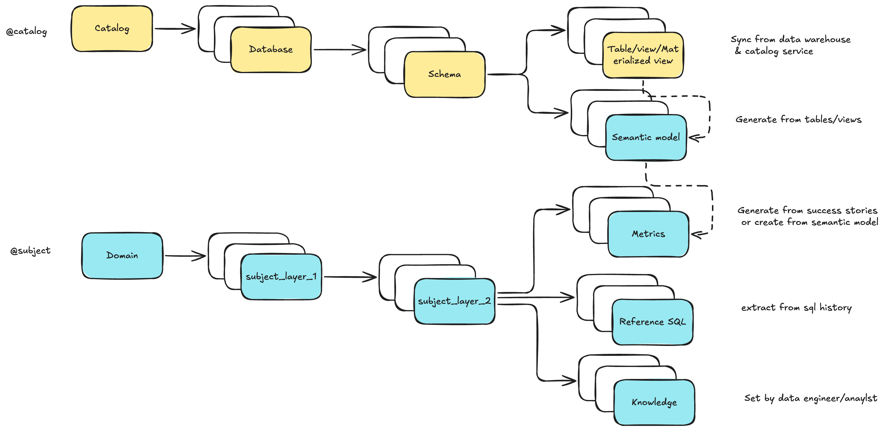
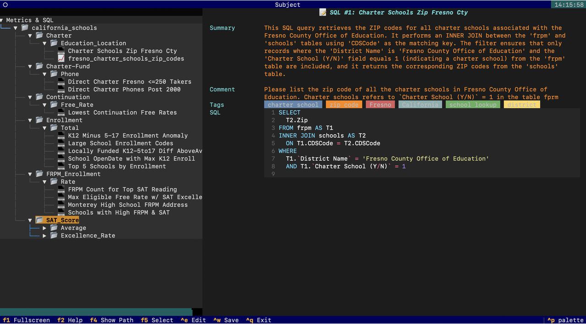
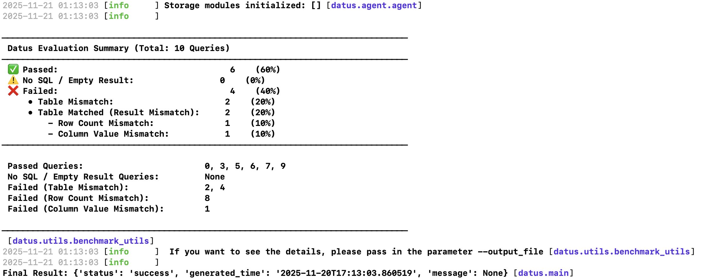
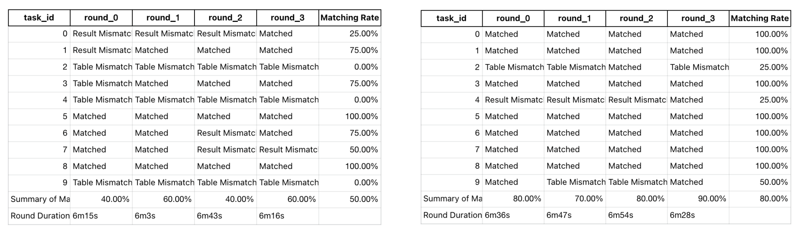

上下文数据工程：理念与手把手教程¶
本文分两部分。第一部分讲解上下文数据工程的理念——它是什么、为什么重要、Datus 如何对长期数据上下文建模。第二部分是端到端的手把手教程，使用内置的 California Schools 数据集，借助你日常工作中也会用到的 /bootstrap REPL 流程把每一个理念落到实处。
如果你只有十分钟，可以直接跳到第二部分——手把手教程。
第一部分 —— 理念¶
什么是上下文数据工程¶
上下文数据工程（Contextual Data Engineering） 是在 AI 时代重新定义数据系统构建、维护与使用方式的新范式。它不再仅仅交付静态的表和管道，而是专注于构建 可演化的上下文——一个智能、鲜活的数据层，将元数据、Reference SQL、语义模型与指标融为一体，既方便人工也方便 AI 智能体理解。

- 传统数据工程：数据管道以交付数据为终点。
- 上下文数据工程：管道本身演化为**数据系统的知识图谱**，持续吸收历史 SQL、反馈循环和人工修正。
这不只是“搬运数据、建表”，而是“理解并持续进化”围绕数据的上下文。
为什么重要¶
缺乏上下文的大模型会产生幻觉
数据上下文广阔且复杂。我们需要最懂数据的数据工程师来构建可复用、面向 AI 的上下文，为每一次查询和回答提供依据。
静态数据表无法满足动态需求
现代业务问题每天都在变化。临时分析请求占据了数据工程师一半的时间，而这些查询背后的知识很少被捕获或复用。
传统数据工程缺乏可演化能力
过去的关注点一直偏向数据消费者（分析与看板），而非构建上下文与准确性的生产端。上下文数据工程改变了这一点——让工程师输出“鲜活的上下文”，而非静态的工件。
为什么选择 Datus¶
上下文自动捕获
Datus 会按需捕获、存储并召回历史 SQL、数据表结构、指标与语义层，将每一次交互都转化为长期知识。
强化的长期记忆
双重召回机制（树结构 + 向量）不仅能记住精确匹配，还能识别语义相关的查询与模式，持续构建你的“上下文图谱”。
不断演进的上下文工程
系统从机器生成与人工反馈中学习，随时间迭代优化。每次纠错、基准测试或成功案例都会沉淀到自我进化的数据记忆中。
核心概念¶
长期记忆¶
我们将 数据工程上下文（长期记忆） 建模为 两棵树：

- 在 Datus CLI 中，可以通过
/catalog与/subject浏览和编辑 - 使用
/bootstrap斜杠命令批量初始化并冷启动知识库 - 借助子代理（Subagent），你可以定义**范围化上下文**——从全局存储中挑选一个精心整理的子集，实现精准、具领域感知的交付
交互式上下文构建¶
协同创作的上下文
大模型从数据表和 Reference SQL 起草语义模型与指标，工程师负责完善标签、元数据和主题树。
命令驱动的迭代
使用 /gen_semantic_model、/gen_metrics、/gen_sql_summary 等命令创建或更新资产；/catalog 和 /subject 页面支持就地编辑。
反馈驱动持续改进
通过 /chat 探索、成功案例回写、问题与基准循环，将使用过程转化为可复用的长期知识。
子代理系统¶

范围化、具领域感知的子代理
将描述、规则和上下文打包，统一管理特定业务场景所需的数据表、SQL 模式、指标与约束。
可配置的工具与 MCP
针对不同场景配置工具。内置工具包括数据库、上下文搜索与文件系统等，可按需启用与组合。
面向强化学习的架构
子代理的范围化上下文构成理想的强化学习环境（环境 + 问题 + SQL），便于持续训练与评估。
工具与组件¶
Datus CLI
专为数据工程师打造的交互式 CLI，内置上下文压缩与检索。提供三类“魔法命令”：
/：发起对话与编排@：查看与召回上下文!：执行节点/工具操作
Datus Agent
一个基准测试与引导工具，作为 CLI 的批处理伙伴，可用于：
- 从历史数据构建初始上下文
- 运行基准测试与评估
- 暴露相应 API
Datus Chat
面向分析师与业务用户的轻量级网页聊天机器人，支持：
- 多轮对话
- 内置反馈（点赞、问题反馈、成功案例）
第二部分 —— 手把手教程：California Schools¶
本演练带你完成上述理念的五个落地结果——构建知识库、打包两个子代理、对比基线与上下文增强的回答效果——但每一步都由你亲自操作。完成后你将得到：
- 一个填充完整的知识库（元数据 / 指标 / Reference SQL）
- 两个工具集差异明显的 子代理（
datus_schools与datus_schools_context） - 一份基线 vs. 上下文增强的基准测试结果可对比
- 一组多轮评估，直观展示上下文演化如何带来 SQL 准确率提升
阅读时间约 5 分钟；总耗时约 15 分钟（其中由 LLM 驱动的 bootstrap 步骤是主要耗时）。
前置条件¶
需要：
- 已安装
datus（参见快速开始） - 在
datus内通过/model配置好 LLM provider；选择器会把凭据写入~/.datus/conf/agent.yml - 通过
/services semantic配置 MetricFlow 语义层适配器；CLI 会自动安装缺失的datus-semantic-metricflow包
不需要下载或手动 cp 任何文件。首次启动 datus 在没有配置时会自动 bootstrap ~/.datus/：
~/.datus/sample/—— 内置样本数据（每次启动覆盖刷新）~/.datus/benchmark/california_schools/—— 你的工作副本（升级时保留改动）~/.datus/conf/agent.yml——california_schools数据源与基准已预写
所以执行一次 datus 之后，可以直接进入 /model 与 /bootstrap。
步骤 1 —— 打开 CLI 并配置模型¶
在 REPL 中：
> /model
──── Model Selection ────────────────────────────────────────────────────────────────────────────────────────────────────────────────────────────────────────────────────────────────
Providers Plans Custom (Tab or ←/→ to switch)
─────────────────────────────────────────────────────────────────────────────────────────────────────────────────────────────────────────────────────────────────────────────────────
→ claude ✓ ← current
deepseek ✓
gemini ✓
kimi ✓
openai ✓
glm [needs setup]
minimax [needs setup]
qwen [needs setup]
─────────────────────────────────────────────────────────────────────────────────────────────────────────────────────────────────────────────────────────────────────────────────────
↑↓ navigate Enter select e edit credentials Tab/←→ switch Esc back Ctrl+C cancel
/model 选择器列出支持的provider。选一个并填入api-key(设置了环境变量可以自动识别)。Datus 会把选择持久化到 ./.datus/config.yml（项目级），凭据写入 ~/.datus/conf/agent.yml。
步骤 2 —— 初始化元数据（Schema tab）¶
在 REPL 内：
> /bootstrap
──── Datus Bootstrap ────────────────────────────────────────────────────────────────────────────────────────────────────────────────────────────────────────────────────────────────
Schema SQL Template Semantic Metrics Knowledge (Tab or ←/→ to switch)
─────────────────────────────────────────────────────────────────────────────────────────────────────────────────────────────────────────────────────────────────────────────────────
Schema
Crawl the live database schema into the metadata RAG.
─────────────────────────────────────────────────────────────────────────────────────────────────────────────────────────────────────────────────────────────────────────────────────
datasource: california_schools
[ ] overwrite (Space to toggle — checked = overwrite, otherwise incremental) ^
─────────────────────────────────────────────────────────────────────────────────────────────────────────────────────────────────────────────────────────────────────────────────────
↑↓/Tab next field ←/→ switch tab Ctrl+R run this tab Esc cancel
按 Ctrl+R，预期输出：
⏺ 💬 Running bootstrap task: metadata
⏺ 💬 Crawling schema from datasource california_schools (mode=overwrite)…
⏺ 🔧 schema_crawl()
└─ ✓
⏺ 💬 Schema crawl finished.
⏺ 💬 Bootstrap finished.
更多介绍见元数据管理。
步骤 3 —— 初始化语义模型（Semantic tab）¶
切到 Semantic tab，填写：
──── Datus Bootstrap ────────────────────────────────────────────────────────────────────────────────────────────────────────────────────────────────────────────────────────────────
Schema SQL Template Semantic Metrics Knowledge (Tab or ←/→ to switch)
─────────────────────────────────────────────────────────────────────────────────────────────────────────────────────────────────────────────────────────────────────────────────────
Semantic
Generate semantic models from a success-story CSV.
─────────────────────────────────────────────────────────────────────────────────────────────────────────────────────────────────────────────────────────────────────────────────────
datasource: california_schools
success_story: ~/.datus/benchmark/california_schools/success_story.csv
[*] overwrite (Space to toggle — checked = overwrite, otherwise incremental) ^
─────────────────────────────────────────────────────────────────────────────────────────────────────────────────────────────────────────────────────────────────────────────────────
↑↓/Tab next field ←/→ switch tab Ctrl+R run this tab Esc cancel
success_story.csv 是 (question, sql) 对的 CSV，是 Datus 起草 MetricFlow 语义模型的 ground truth。该文件随样本数据集一起发布，因此上面的路径可直接使用。
按 Ctrl+R，预期输出：
⏺ 💬 Running bootstrap task: semantic_model
⏺ gen_semantic_model(~/.datus/benchmark/california_schools/success_story.csv (mode=overwrite))
⎿ Done (15 tool uses · 98.1s)
⏺ 💬 gen_semantic_model (~/.datus/benchmark/california_schools/success_story.csv (mode=overwrite)):
Semantic Models Generated for california_schools
Analysis Summary
• SQL Queries Analyzed: 2 queries across 2 tables
• Tables Identified: frpm, schools
• Relationship Discovered: frpm.CDSCode → schools.CDSCode (HIGH confidence, via DDL foreign key constraint)
Datus 会按表推断维度与度量，将 MetricFlow YAML 写入项目的 subject/semantic_models/ 目录。
步骤 4 —— 初始化指标（Metrics tab）¶
切到 Metrics tab，填写：
datasource: california_schools
success_story: ~/.datus/benchmark/california_schools/success_story.csv
pool_size: 3
subject_tree: california_schools/Continuation_School/Free_Rate,california_schools/Charter/Education_Location
overwrite: [x]
subject_tree 是逗号分隔的 domain/layer1/layer2 路径列表。Datus 会把每个生成的指标挂在某个叶子上，最终知识库可按主题浏览。
按 Ctrl+R，预期输出（节选）：
⏺ gen_metrics(~/.datus/benchmark/california_schools/success_story.csv (mode=incremental))
⎿ Done (20 tool uses · 90.0s)
⏺ 💬 gen_metrics (~/.datus/benchmark/california_schools/success_story.csv (mode=incremental)):
SQL Analysis Summary
Query 1 — Continuation School Free Rate (Ages 5-17)
Business Question: What are the eligible free meal rates (ages 5-17) for continuation schools?
Metric Extracted: continuation_school_free_rate_ages_5_17
• Type: ratio
• Numerator measure: continuation_school_free_meal_count_ages_5_17 — SUM(CASE WHEN Educational Option Type = 'Continuation School' THEN Free Meal Count (Ages 5-17) ELSE 0 END)
• Denominator measure: continuation_school_enrollment_ages_5_17 — SUM(CASE WHEN Educational Option Type = 'Continuation School' THEN Enrollment (Ages 5-17) ELSE 0 END)
• Subject tree: california_schools/Continuation_School/Free_Rate
• Status: ✅ Created, validated, dry-run passed, synced to Knowledge Base
更多介绍见指标文档。
步骤 5 —— 初始化 Reference SQL（SQL tab）¶
切到 SQL tab，填写：
datasource: california_schools
sql_dir: ~/.datus/benchmark/california_schools/reference_sql
pool_size: 3
subject_tree: california_schools/Continuation/Free_Rate,california_schools/Charter/Education_Location,california_schools/Charter-Fund/Phone,california_schools/SAT_Score/Average,california_schools/SAT_Score/Excellence_Rate,california_schools/FRPM_Enrollment/Rate,california_schools/Enrollment/Total
overwrite: [x]
按 Ctrl+R，预期输出：
⏺ gen_sql_summary(/Users/liuyufei/.datus/benchmark/california_schools/reference_sql/california_schools_1.sql)
⎿ Done (2 tool uses · 19.4s)
⏺ 💬 gen_sql_summary (/Users/liuyufei/.datus/benchmark/california_schools/reference_sql/california_schools_1.sql):
SQL Summary: Continuation School Free Rate Bottom 3
🔍 Query Purpose
This query identifies the 3 lowest eligible free meal rates for students aged 5-17 enrolled in Continuation Schools, using data from the frpm table.
......
⏺ 💬 Indexed 13 reference SQL item(s).
⏺ 💬 Bootstrap finished.
Datus 会解析 sql_dir 下的每个 .sql 文件，生成自然语言摘要、抽取联接与过滤条件，并按主题树叶子建立索引。
更多介绍见 Reference SQL 文档。
步骤 6 —— 浏览所建内容¶
继续在 REPL：
主题树应已被指标和 SQL 摘要填充：

/catalog 用于查看表/列元数据。这两个页面是后续你（与 AI）浏览知识库的主要入口。
步骤 7 —— 创建两个子代理¶
打开 ~/.datus/conf/agent.yml，在 agent: 节点下追加以下两段：agentic_nodes（定义两个子代理）与 workflow（定义对应的编排管线）：
agentic_nodes:
datus_schools:
system_prompt: datus_schools
prompt_version: '1.0'
prompt_language: en
agent_description: ''
tools: db_tools, date_parsing_tools
mcp: ''
rules: []
datus_schools_context:
system_prompt: datus_schools_context
prompt_version: '1.0'
prompt_language: en
agent_description: ''
tools: context_search_tools, db_tools, date_parsing_tools
mcp: ''
rules: []
workflow:
datus_schools:
- datus_schools
- execute_sql
- output
datus_schools_context:
- datus_schools_context
- execute_sql
- output
两个子代理的关键差异是 context_search_tools —— 只有 datus_schools_context 能召回前面 Step 3–5 构建的指标与 Reference SQL。这正是下一步基准测试要量化的差异。
调用子代理¶
/agent 不带参数会打开 TUI（Enter 切换当前 agent）；带名字则把默认 agent 切到 <name>：
如果只想就单条提问临时路由到某个 subagent，使用 @Agent <name> 提示：
同样的子代理也可在 Datus-Chat 中使用。
步骤 8 —— 基准测试：基线 vs. 上下文增强¶
回到 shell，先跑基线：
datus-agent benchmark \
--datasource california_schools \
--benchmark california_schools \
--workflow datus_schools
datus-agent eval \
--datasource california_schools \
--benchmark california_schools \
--output_file schools1.txt
再跑上下文增强版：
datus-agent benchmark \
--datasource california_schools \
--benchmark california_schools \
--workflow datus_schools_context
datus-agent eval \
--datasource california_schools \
--benchmark california_schools \
--output_file schools2.txt

对比 schools1.txt 和 schools2.txt。上下文增强子代理生成的 SQL 在语义上更准确、列幻觉更少、联接更合理——因为它能召回前面构建的 Reference SQL 模式与指标定义。
步骤 9 —— 多轮基准测试¶
这是上下文数据工程最具说服力的演示——通过多轮迭代让上下文继续演化：
datus-agent multi-round-benchmark \
--config ~/.datus/conf/agent.yml \
--datasource california_schools \
--benchmark california_schools \
--workflow datus_schools_context \
--max_round 4 \
--group_name context_tools

左图为不带上下文工具（datus_schools）的准确率；右图为带上下文工具（datus_schools_context）的准确率。注意后者起点更高，且随轮数的提升曲线更陡。
总结¶
到这里，你已经完整跑通了 Datus 的端到端循环：
| 组件 | 你完成的事情 |
|---|---|
| 元数据 bootstrap | 索引了 schema、列描述与采样行 |
| 语义模型 bootstrap | 基于成功案例生成 MetricFlow YAML |
| 指标 bootstrap | 抽取业务指标并落入主题树 |
| Reference SQL bootstrap | 19 个 SQL 文件被摘要、连接、索引 |
| 子代理 | 两个工具集差异明显的范围化代理 |
| 基准测试 | 量化对比基线 vs. 上下文增强 |
| 多轮迭代 | 见证上下文演化推动准确率提升 |
同样的流程适用于你自己的领域——把 /bootstrap 指向你自己的成功案例和 SQL 目录，一小时内就能拥有一个真正可演化的知识库。
下一步¶
相关资源¶
- 元数据管理 —— 组织与管理数据表结构和字段说明
- 指标定义 —— 定义可复用的业务指标
- Reference SQL 追踪 —— 捕获并利用历史查询模式
- 上下文命令参考 —— CLI 上下文命令全览